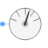
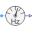
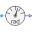

AbsoluteSensorPartial potential sensor |

|
Information
This information is part of the Modelica Standard Library maintained by the Modelica Association.
The absolute sensor partial model relies on the a positive plug to measure the complex potential, frequency, angular frequency. Additionally this model contains a proper icon and a definition of the angular velocity.
See also
RelativeSensorElementary, SinglePhase.Interfaces.AbsoluteSensor, SinglePhase.Interfaces.RelativeSensorElementary
Parameters (1)
| m |
Value: 3 Type: Integer Description: Number of phases |
|---|
Connectors (1)
| plug_p |
Type: PositivePlug Description: Positive quasi-static polyphase plug |
|---|
Extended by (3)
|
Modelica.Electrical.QuasiStatic.Polyphase.Sensors Potential sensor |
|
|  |
Modelica.Electrical.QuasiStatic.Polyphase.Sensors Frequency sensor |
|  |
Modelica.Electrical.QuasiStatic.Polyphase.Sensors Sensor of reference angle gamma |